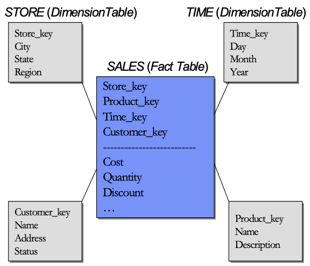
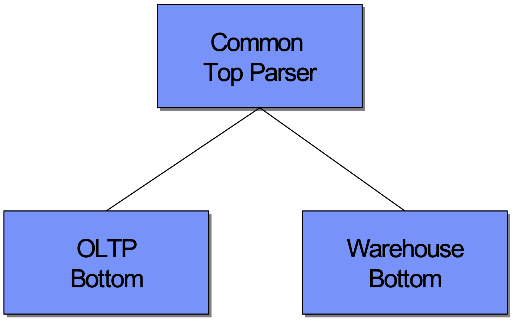
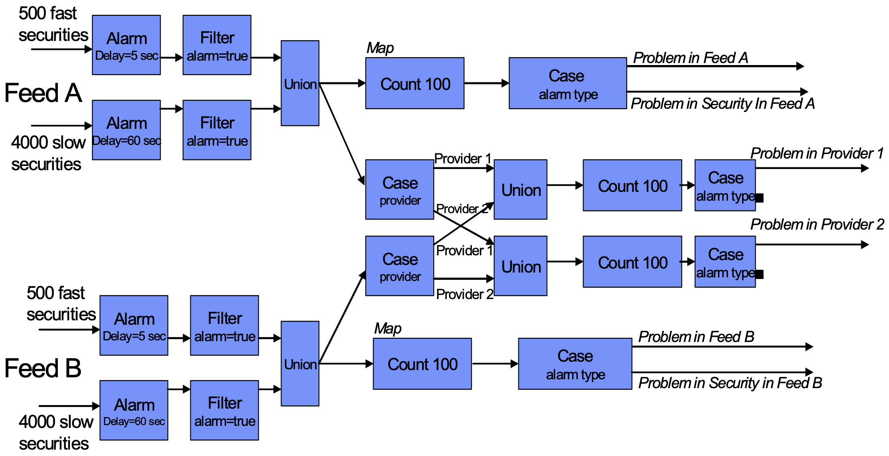
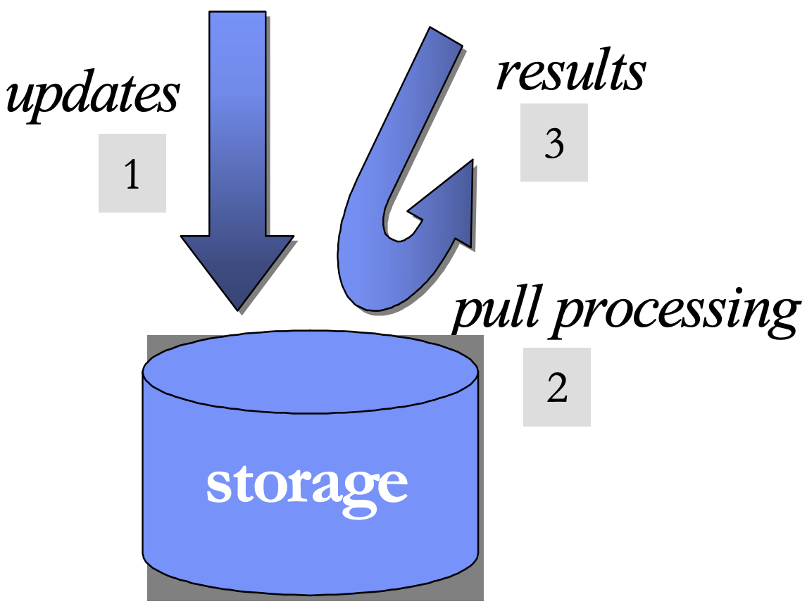
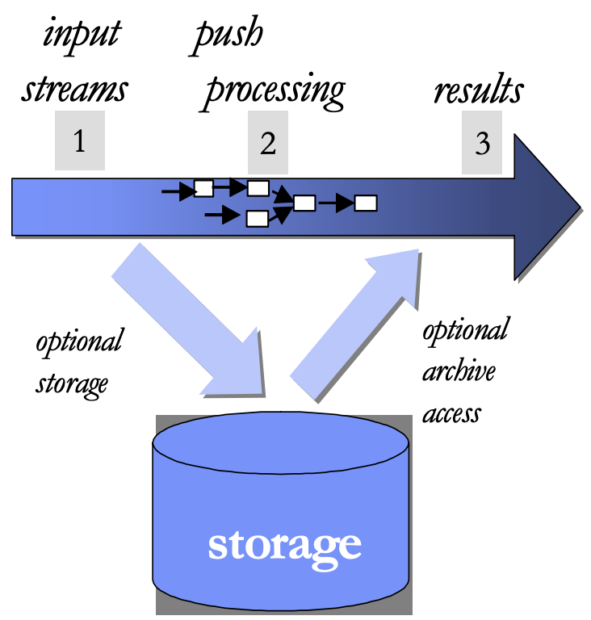
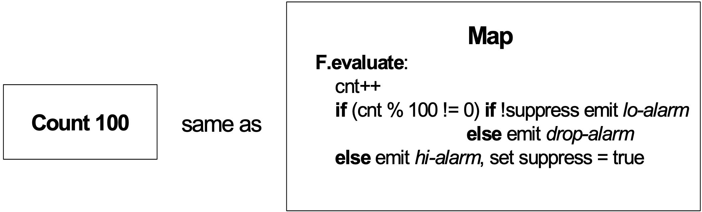
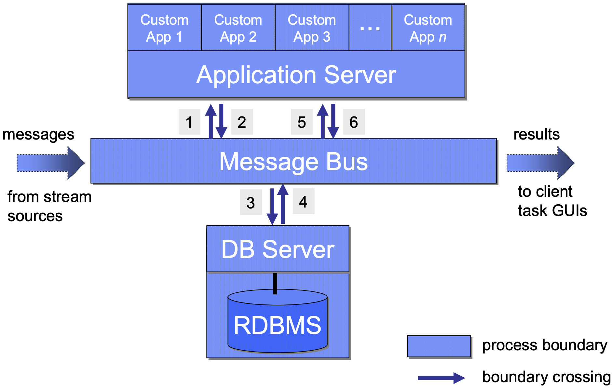

Исследовательские прототипы реляционных СУБД System R и INGRES были созданы в 1970-е гг.
Оба проекта были, в основном, направлены на то, чтобы превзойти СУБД IMS по ее значимости для
заказчиков для тех приложений, на поддержку которых она была рассчитана, а именно, приложений
«обработки бизнес-данных». Поэтому обе системы конструировались в расчете на приложения оперативной
обработки транзакций (on-line transaction processing, OLTP), и в 1980-е гг. их коммерческие двойники
(DB2 и IINGES соответственно) получили признание в этой области. Другие поставщики (например,
Sybase, Oracle и Informix) следовали той же базовой модели СУБД, в которой реляционные таблицы
сохраняются по строкам, для индексации используются B-деревья, используется оценочный оптимизатор,
и поддерживаются свойства транзакций ACID.
С начала 1980-х гг. основные поставщики СУБД твердо придерживаются стратегии «безразмерности», в
соответствии с которой поддерживается единственная линия кода для всех служб СУБД. Выбор такого
подхода объясняется очень просто – использование нескольких линий кода порождает различные практические
проблемы, включая следующие:
Чтобы избежать этих проблем, все основные поставщики СУБД следовали принципу концентрации усилий на одном продукте. В этой статье мы утверждаем, что эта стратегия уже потерпела неудачу, а в будущем ее провал будет проявляться гораздо более заметным образом.
Оставшаяся часть статьи устроена следующим образом. В разд. 2 мы кратко покажем, что стратегия единственной линии кода уже потерпела неудачу, перечислив ключевые характеристики рынка хранилищ данных. В разд. 3 мы обсудим приложения обработки потоковых данных и приведем конкретный пример, в котором специализированное программное средство обработки потоковых данных по производительности превосходит РСУБД на два порядка. В разд. 4 мы проанализируем причины такого различия в производительности и покажем, что технология СУБД, по-видимому, не можем добиться конкурентоспособности на этом рынке. Поэтому мы ожидаем, что на рынке систем обработки потоковых данных будут преуспевать специализированные программные средства. В разд. 5 обсуждаются другие области, в которых безразмерные системы, видимо, непригодны, и реально применение других, специализированных систем баз данных. Следовательно, можно ожидать обширной фрагментации рынка СУБД. В разд. 6 мы приведем некоторые комментарии относительно разбиения системного программного обеспечения по продуктам. Наконец, в разд. 7 будут приведены заключительные замечания.
В начале 1990-х гг. появилась новая тенденция. Компании понадобилось объединять данные из нескольких оперативных баз данных в некоторое хранилище данных для целей бизнес-аналитики. У типичного крупного предприятия имеется около 50 оперативных систем, у каждой из которых имеется свое сообщество пользователей, рассчитывающих на быструю реакцию системы. Системные администраторы неохотно допускали (и допускают) в оперативные системы пользователей-аналитиков, опасаясь того, что сложные непредвиденные запросы этих пользователей приведут к увеличению времени отклика на запросы онлайнового сообщества. Кроме того, бизнес-аналитикам часто требуется видеть исторические тенденции, а также устанавливать соотношения между данными из разных источников. Эти особенности сильно отличаются от того, что требуется онлайновым пользователям.
По этим причинам, по существу, каждая компания создавала большое хранилище данных, и периодически «соскабливала» в него данные из оперативных систем. Пользователи-аналитики получали возможность выполнения сложных запросов над данными хранилища данных, не воздействуя на онлайновых пользователей. Хотя в большинстве проектов хранилищ данных существенно превышался бюджет, и в результате выполнения этих проектов обеспечивалось лишь некоторое подмножество обещанных функциональных средств, эти проекты все-таки приводили к разумной окупаемости инвестиций. На самом деле, широко распространено мнение, что исторические хранилища данных о розничных сделках окупаются в течение года, главным образом, за счет более обоснованных оборотов товарных запасов и покупательских решений. Например, пользователь-аналитик может обнаружить, что домашние камни (pet rock) закончились, а куклы Барби еще имеются, а затем принять соответствующие решения о размещении и покупках товаров.
Хранилища данных существенно отличаются от систем OLTP. Системы OLTP оптимизированы для выполнения обновлений, поскольку в бизнесе основным действием является продажа товара или услуги. В отличие от этого, основным действием в хранилище данных является выполнение непредвиденных запросов, которые часто бывают достаточно сложными. Поэтому хранилище данных обычно подвергается периодической загрузке новых данных, перемежающейся с выполнением непредвиденных запросов.
Что касается схем хранилищ данных, то стандартной премудростью является создание таблицы фактов, содержащей информацию вида «кто, что, когда и где» по поводу каждой оперативной транзакции. Например, на рис. 1 показана схема хранилища данных типичного розничного торговца. В центральной таблице фактов хранится запись для каждого отдельного предмета, который сканируется кассиром в каждом магазине торговой сети.

Рис. 1. Типичная схема «звезда»
Кроме того, в хранилище данных хранятся таблицы измерений, содержащие информацию о каждом магазине, каждом покупателе, каждом продукте и каждом промежутке времени. В действительности, в таблице фактов содержится внешний ключ для каждого из этих измерений, и естественным результатом является схема «звезда». Такие звездообразные схемы повсеместны в средах хранилищ данных, но они практически не встречаются в средах OLTP. Хорошо известно, что приложения хранилищ данных лучше работают при использовании битовых (bit-map) индексов, в то время как пользователи OLTP-приложений предпочитают индексы на основе B-деревьев. Причины очень просты: битовые индексы являются более компактными и быстрее работают в условиях рабочей нагрузки, свойственной хранилищам данных, но не могут хорошо работать в средах OLTP. В результате многие поставщики поддерживают в своих продуктах СУБД и индексы на основе B-деревьев, и битовые индексы.
Кроме того, в мире хранилищ данных полезная тактика оптимизации основывается на материализованных представлениях, но они никогда не используются в мире OLTP. В средах OLTP широко распространены обычные («виртуальные») представления.
В первом приближении можно сказать, что у большинства поставщиков имеется одна СУБД, поддерживающая хранилища данных (битовые индексы, материализованные представления, звездообразные схемы и тактики оптимизации в расчете на запросы к звездообразным схемам), и другая СУБД, поддерживающая оперативную обработку транзакций (индексы на основе B-деревьев и стандартный оценочный оптимизатор), объединяемые общим языковым интерфейсом, как это показано на рис. 2.

Рис. 2. Архитектура современной СУБД
Хотя такая конфигурация позволяет поставщику продавать свой продукт на рынке, как единую систему, поскольку она обладает одним пользовательским интерфейсом, в действительности, продается несколько систем. Кроме того, как рынок OLTP, так и рынок хранилищ данных оказывают существенное давление на поставщиков по поводу обеспечения возможностей, бесполезных для другого мира. Например, в базах данных OLTP распространено представление названия штата (в США) в адресе в виде двухбайтовой символьной строки. С другой стороны, очевидно, что для представления 50 штатов достаточно шести бит. Если бы можно было обосновать затраты на кодировку поля штата достаточным числом запросов или большим объемом соответствующих данных, то предпочтительным было бы второе представление. Обычно это так для хранилищ данных, но не для приложений OLTP. Следовательно, усовершенствованное кодирование значений полей – это особенность хранилищ данных, почти или полностью бесполезная для OLTP. Включение в коммерческие продукты дополнительных возможностей, ориентированных на конкретные области применения, будет все более приближать их архитектуры к виду, показанному на рис. 2.
Иллюзия «безразмерности» как маркетинговая фантазия может сохраняться для двух разных систем, показанных на рис. 2, по причине наличия общего пользовательского интерфейса. На рынке обработки потоковых данных, к которому мы сейчас обратимся, такой общий интерфейс является непрактичным. Поэтому на этом рынке будут присутствовать не только другие серверные программные средства, но и другие интерфейсы. В потоковом мире не будет витать маркетинговая фантазия «безразмерности».
В настоящее время исследовательское сообщество проявляет значительный интерес к приложениям обработки потоковых данных. Причиной этого интереса является приближающаяся коммерческая жизнеспособность сенсорных сетей. Хотя уже сейчас всю прессу заполонила информация о RFID, и эта технология найдет широкое признание в приложениях розничной торговли, относящихся к оптимизации цепочек поставок, имеется много и других технологий. Многие эксперты из индустрии говорят о наличии «невозделанного поля» приложений мониторинга, которым откроет дорогу это «чудесное преображение», вызванное появлением сетей недорогих сенсорных устройств.
Очевидные приложения технологии сенсорных сетей имеются в военной области. Например, в армии США изучается возможность оснащения всех солдат мониторами показателей жизненно-важных функций, которые могут оптимизировать очередность оказания помощи раненым в боевых условиях. Кроме того, на многих военных транспортных средствах уже имеются системы GPS, которые, правда, еще не подключены к какой-либо системе с замкнутым контуром. Вместо этого военные хотели бы отслеживать местоположение всех транспортных средств и в реальном времени определять, не отклонились ли они от заданного курса. Они хотели бы также иметь сенсоры на оружейных башнях; получаемая от них информация совместно с информацией о местоположении позволяет устанавливать наличие ситуаций перекрестного огня. Сенсоры в указателях уровня топлива позволят оптимизировать дозаправку транспортных средств. В целом, артиллерийский батальон из 30000 военнослужащих и 12000 единиц транспортных средств скоро будет представлять собой крупномасштабную сенсорную сеть из нескольких сотен тысяч узлов, доставляющих в реальном времени информацию о местоположении и состоянии людей и техники.
Обрабатывающие узлы и серверы нисходящих потоков данных должны справляться с этим «пожарным шлангом» данных. В число требуемых операций входят сложные предупреждения, позволяющие, например, командиру взвода узнать, когда три из четырех вверенных ему транспортных средств пересекают линию фронта. Также требуются и исторические запросы, такие как «Где находилось транспортное средство номер 12 в течение последних двух часов?». Наконец, в число требований входят и «продольные» (longitudinal) запросы, такие как «Каково общее состояние боеготовности вооруженных сил на данный момент?».
Со временем появятся другие основанные на сенсорах приложения мониторинга в не военных областях. Одним из примеров является отслеживание транспортных пробок и предложение альтернативных маршрутов движения. Родственным приложением является система сбора платы на пользование платными автомагистралями, которой размер платы изменяется в зависимости от загруженности магистрали; размышления об этом приложении привели к созданию эталонного тестового набора для систем обработки потоковых данных Linear Road [9]. В парках развлечений пассивные браслеты, выдаваемые посетителям, скоро будут заменены активными сенсорами, что позволит оптимизировать работу аттракционов и легко находить потерявшихся детей. Мобильные телефоны уже являются активными устройствами, и легко представить себе службу, позволяющую голодному владельцу телефона найти ближайший ресторан. Даже библиотечные книги будут оснащены сенсорами, потому что в большой библиотеке книга, поставленная не на нужную полку, может навсегда потеряться.
Широко распространено предположение, что традиционные СУБД не смогут эффективно поддерживать этот новый класс приложений мониторинга. На самом деле, на тестовом наборе Linear Road традиционные решения оказываются на два порядка более медленными, чем решения, основанные на использовании специализированного сервера обработки потоковых данных. Непригодность традиционной технологии СУБД к потоковым приложениям подтверждается также и анализом имеющихся в настоящее время прикладных областей, связанных с потребностью обработки потоковых данных. Обсудим свой опыт работы с одним из таких приложений, приложением обработки потоков финансовых данных
Большинство крупных финансовых организаций подписывается на информационные каналы, по которым в реальном времени доставляются данные о рыночной деятельности, а именно, новости, информация о завершенных сделках, предложениях и запросах и т.д. Такие каналы обеспечиваются, например, компаниями Reuters, Bloomberg и Infodyne. У финансовых организаций имеются разнообразные приложения, обрабатывающие данные, которые поступают по таким каналам. В их число входят системы, производящие бизнес-анализ данных в реальном времени, выполняющие электронные сделки, обеспечивающие соответствие всех сделок правилам различных компаний и Комиссии по ценным бумагам и биржам (SEC), оценивающие в реальном времени величины рисков и уровень влияния на рынок колебаний курсов иностранных валют. Для реализации этого класса приложений неизменно используется технология «самокрутки» («roll your own»), поскольку для экспертов этой предметной области оказываются недостаточными возможности имеющихся на рынке системных программных продуктов.
Для обеспечения более глубокого понимания проблем обработки данных финансовых каналов опишем более подробно прототип одного из конкретных приложений, которое было специфицировано крупной компанией, поддерживающей фонд взаимных инвестиций. Эта компания подписывается на несколько коммерческих каналов, и у нее имеется производственное приложение, отслеживающее все каналы на предмет наличия в них устаревших данных. Идея состоит в выдаче трейдерам предупреждения, если в каком-либо канале данные запаздывают, чтобы дать им знать, что информации, обеспечиваемой этим каналом, не следует доверять. Эта компания была не удовлетворена эффективностью и гибкостью своего «самокруточного» решения и хотела получить опытную версию приложения, основанного на использовании системы обработки потоковых данных.
Технические специалисты компании специфицировали упрощенный вариант своего действующего приложения с целью изучения различий в производительности используемой системы и прототипа, разработанного с применением специализированных средств обработки потоковых данных. В соответствии с этой спецификацией они стремились к достижению максимальной скорости обработки сообщений на одиночной машине класса PC при поддержке двух каналов, поставляющих данные с двух бирж.
Более точно, имелось 4500 ценных бумаг, из которых 500 являлись «ходовыми» («fast moving»). Биржевая отметка (stock tick) такой ценной бумаги является запаздывающей, если поступает более чем на пять секунд позже предыдущей отметки той же самой бумаги. Остальные 4000 ценных бумаг являлись неходовыми, и отметка такой бумаги считалась запаздывающей, если поступала более чем на 60 секунд позже предыдущей отметки.
Имелось два поставщика данных, и компания желала получать предупредительное сообщение при наличии устаревших отметок, поступающих от любого из них. Кроме того, для каждого поставщика требовалось поддерживать счетчик числа запаздывающих отметок. При получении 100 запаздывающих отметок от любого поставщика компания хотела получать специальное сообщение «это действительно плохо», после чего следовало перестать реагировать на биржевые отметки, поступающие от этого поставщика.
Последней хитростью этой спецификации было то, что они хотели накапливать данные о запоздавших отметках от каждой из двух бирж, скажем NYSE и NASD, независимо от того, кто из поставщиков каналов производил запаздывающие данные. При получении 100 запоздавших сообщений от любой биржи по каналу любого поставщика они желали получить два дополнительных сообщения. В совокупности им требовались четыре счетчика от нуля до ста и генерация специальных сообщений при достижении предельного значения любого из этих счетчиков. Абстрактное представление диаграммы запросов этой задачи показано на рис. 3.

Рис. 3. Приложение Feed Alarm в StreamBase
Хотя в этом прототипе приложения была реализована только часть логики реальной производственной системы, в нем решалась вполне конкретная задача, для которой вполне можно было измерять производительность; пример являлся полностью представительным. Обратимся теперь к скорости работы этого прототипного приложения при его реализации на основе сервера обработки потоковых данных и РСУБД.
Экспериментальное приложение, обсуждавшееся в предыдущем разделе, было реализовано с использованием системы обработки потоковых данных (stream processing engine (SPE)) StreamBase, которая, по существу, является коммерческим, производственным вариантом системы Aurora. На компьютере с процессором Pentium 2.8 Ггц, 512 Мб основной памяти и одним диском SCSI поток работ, показанный на рис. 3, выполнялся со скоростью 160000 сообщений в секунду без достижения предельной загруженности ЦП. При реализации того же приложения с использованием одной из популярных коммерческих СУБД инженерам StreamBase удалось добиться скорости всего лишь в 900 сообщений в секунду.
В этом разделе мы обсудим основные причины, которые привели к этому различию производительности в два порядка. Как мы утверждаем ниже, эти причины связаны с моделью входной обработки, выбором правильных примитивов потоковой обработки и бесшовной интеграцией обработки, выполняемой СУБД, с обработкой, производимой приложением. Кроме того, мы обсудим особенности транзакционного поведения, обеспечение которого часто входит в число основных требований.
В модель СУБД, по существу, встраивается то, что мы называем «выходной» («outbound») обработкой, схема которой показана на рис. 4. На первом шаге данные заносятся в базу данных. После индексирования данных и фиксации транзакции эти данные становятся доступными для последующего выполнения запросов (шаг 2), после чего данные представляются пользователю (шаг 3). Эта модель «обработки после сохранения» лежит в основе всех традиционных СУБД, что и не удивительно, поскольку, в конце концов, основной функцией СУБД является принятие данных с тем, чтобы они никогда не были утрачены.

Рис. 4. «Выходная» обработка
В приложениях реального времени операция сохранения данных, которая должна выполняться до их обработки, увеличивает как время задержки в приложении, так и стоимость обработки сообщения приложением. Альтернативная модель обработки, в которой удается избежать узкого места сохранения данных, показана на рис. 5. В этой модели входные потоки проталкиваются в систему (шаг 1) и обрабатываются «на лету» в основной памятью сетью запросов (шаг 2). Затем результаты выталкиваются в клиентские приложения для их конечного потребления (шаг 3). Чтение из области постоянного хранения и запись в нее являются необязательными, и во многих случаях, когда в них возникает необходимость, выполняются асинхронно. Тот факт, что область постоянного хранения отсутствует или является необязательной, позволяет сократить и стоимость обработки, и время задержки, что приводит к существенно более высокой производительности. Именно эта модель «входной» обработки используется в системе обработки потоковых данных StreamBase.

Рис. 5. «Входная» обработка
Конечно, может возникнуть вопрос «А не может ли и СУБД производить входную обработку?». СУБД исходно разрабатывались, как серверы выходной обработки данных, но много лет спустя в них были внедрены механизмы триггеров. Для триггеров имеется много ограничений (например, число триггеров, ассоциируемых с одной таблицей), и отсутствует какой-либо способ гарантирования безопасности набора триггеров (т.е. гарантирования того, что при выполнении триггеров не образуется бесконечный цикл). Во всех системах имеется очень ограниченная (или отсутствует вовсе) поддержка программирования триггеров. Например, невозможно увидеть, какие триггеры уместны для данного приложения, и отсутствует возможность добавления триггера к таблице средствами графического пользовательского интерфейса. Кроме того, виртуальные и материализованные представления могут определяться для обычных таблиц, но не для триггеров. Наконец, в существующих серверах триггеры часто вызывают проблемы производительности. Когда инженеры StreamBase попытались применить триггеры в приложении Feed Alarm, они не смогли обработать более 900 сообщений в секунду. В целом, триггеры встраивались в существующие разработки задним умом, и в существующих системах они являются жителями второго сорта.
По-другому это различие можно представить следующим образом. Серверы с выходной обработкой сначала сохраняют данные, а затем выполняют запросы над этими данными. Системы же с входной обработкой сначала сохраняют запросы, а затем пропускают сквозь эти запросы входящие данные (сообщения).
Хотя представляется возможным сконструировать некоторый сервер, который могли бы функционировать и в режиме входной обработки, и в режиме выходной обработки, для этого требуется дополнительная исследовательская работа. В настоящее время СУБД оптимизируются для выходной обработки, а системы обработки потоковых данных – для выходной обработки. В приложении Feed Alarm это отличие в подходе во многом способствовало получению существенного выигрыша в производительности.
В SQL-ориентированных системах имеется сложная система агрегации, которая позволяет пользователю производить статистические вычисления над группами записей таблицы, хранящейся в базе данных. Стандартным примером является следующий:
При достижении последней записи таблицы обработчик запроса может инициировать агрегатные вычисления для каждой группы записей. Однако эта конструкция не слишком полезна для потоковых приложений, в которых потоки существуют бесконечно, и отсутствует понятие «конца таблицы».
Поэтому в системах обработки потоковых данных SQL (или какой-либо другой язык с поддержкой агрегации) расширяется понятием временного окна. В StreamBase окна можно определять на основе датчика времени, числа сообщений или контрольных точек некоторого другого атрибута. В приложении Feed Alarm (рис. 3) крайний слева блок в каждом потоке является таким блоком агрегации. В этом блоке агрегации акции группируются по символам, а затем для каждой акции определяются окна на основе пар отметок 1 и 2, 2 и 3, 3 и 4 и т.д. Такие «скользящие окна» («sliding windows») часто оказываются очень полезными в приложениях реального времени.
Кроме того, в StreamBase агрегаты конструируются в расчете на интеллектуальную обработку запаздывающих, нарушающих порядок или теряющихся сообщений. В приложении Feed Alarm заказчиков в основном интересовали запаздывающие данные. В StreamBase у агрегатов над окнами может иметься два дополнительных параметра. Первый параметр – это значение таймаута; это параметр заставляет StreamBase закрыть окно и выдать значение, даже если условие закрытия окна не было выполнено. Этот параметр позволяет эффективно обрабатывать запаздывающие или теряющиеся сообщения. Второй параметр – это резервный интервал времени, в течение которого окно остается открытым после выполнения условия его закрытия. Этот параметр дает возможность реагировать на нарушение порядка поступления сообщений. Эти два параметра позволяют пользователям специфицировать действия системы при возникновении аномалий в потоках, и их можно эффективно использовать для повышения устойчивости системы.
В приложении Feed Alarm размер каждого окна составляет две отметки, но для него устанавливается таймаут в 5 или 60 секунд. Это приведет к закрытию окна, если размер временного интервала между поступлением последовательных отметок превысит максимальное значение, определенное пользователем. Такая возможность позволяет очень эффективно обнаруживать запаздывающие данные в качестве побочного эффекта тонкой настройки логики вычисления агрегатов. В приложении Feed Alarm блок, следующий за агрегатным блоком, отбрасывает достоверные данные и сохраняет только сообщения о таймауте. В оставшейся части приложения выполняется требуемая дополнительная обработка этих таймаутов.
Наличие правильных примитивов на нижних уровнях системы позволяет добиться очень высокой производительности. В отличие от этого, в реляционных системах отсутствуют подобные встроенные конструкции. Воспроизведение их эффекта с использование традиционного SQL занимает довольно много времени, и это является второй причиной существенной разницы в производительности.
К SQL можно добавить средства поддержки временных окон, но они не имеют смысла при работе с хранимыми данными. Поэтому конструкции для работы с окнами следует встраивать в системы, основанные на модели входной обработки.
Реляционные СУБД разрабатывались в расчете на наличие клиент-серверной архитектуры. В этой модели имеется много клиентских приложений, которые писаться случайными людьми, и поэтому такие приложения обычно являются ненадежными. Из соображений безопасности и надежности эти клиентские приложения запускаются в отдельных адресных пространствах. За это приходится платить расходами на переключение контекста процессов при каждом обращении из клиентского приложения в СУБД.
В отличие от этого, приложение Feed Alarm является примером встроенной системы. Такие системы пишутся одним человеком или одной группой, которые заслуживают доверия в том, что они «делают все правильно». Приложение включает следующие части: (1) СУБД, поддерживающую, например, блоки агрегации и фильтрации; (2) логику управления, в соответствии с которой сообщения направляются на следующий этап обработки; (3) логику приложения. В StreamBase эти виды функциональных возможностей могут свободно перемежаться. Логика приложения поддерживается в блоках, созданных пользователями; в нашем примере приложения обработки финансовых каналов это блок Count 100 (рис. 6). Программный код этого блока, показанный на рис. 6, состоит из четырех строк на языке C++, в которых поддерживается счетчик от 0 до 100, и при необходимости выдаются соответствующие сообщения. Логика управления поддерживается за счет помещения в блок фильтрации нескольких предикатов и соответствующего наличия нескольких выходных дуг. По существу, кроме фильтрации потоков, блок фильтрации выполняет логику «it-then-else».

Рис. 6. Логика Count 100
В сущности, приложение Feed Alarm представляет собой смесь обработки в стиле СУБД, условных выражений и функций, написанных на обычном языке программирования. Эта комбинация выполняется системой StreamBase в едином адресном пространстве без каких-либо переключений контекстов процессов. Такая бесшовная интеграция логики СУБД со средствами традиционного программирования была предложена много лет назад в Rigel и Pascal-R, но никогда не реализовывалась в коммерческих реляционных системах. Вместо этого поставщики реализовывали хранимые процедуры, которые являются намного более ограниченными программными системами. Позднее в объектно-реляционных системах появились блейды или экстендеры, более мощные, чем хранимые процедуры, но и они не способствовали реализации гибкой логики управления.
Встроенные системы не нуждаются в защите, обеспечиваемой клиент-серверными СУБД, а двухзвенная архитектура только добавляет накладные расходы. Это третий источник различия в производительности, демонстрируемого нашим прототипным приложением.
Еще одним аспектом интеграции, не продемонстрированным в примере Feed Alarm, является сохранение потоковыми приложениями информации о состоянии. В большинстве приложений обработки потоковых данных требуется сохранение некоторого состояния объемом от нескольких мегабайт до нескольких гигабайт. Такая информация о состоянии может включать (1) справочные данные (например, какие акции представляют интерес); (2) таблицы перевода (в финансовых каналах для одной и той же акции могут использоваться разные символы); (3) исторические данные (например, «сколько отметок наблюдалось ежедневно в течение последнего года?»). По существу, для большинства приложений обработки потоковых данных требуется табличное хранилище данных.
Для сохранения состояния в StreamBase встраивается система BerkeleyDB. Однако имеется разница в производительности на порядок между ситуациями, когда BerkeleyDB вызывается в адресном пространстве StreamBase, и когда она вызывается в клиент-серверном режиме в другом адресном пространстве. Это еще одна причина для того, чтобы избегать переключения процессов путем размещения СУБД и приложения в одном адресном пространстве.
Хотя для решения этой проблемы производительности можно было бы предложить усовершенствовать программные модели СУБД, имеются очень веские причины, по которым клиент-серверные СУБД разрабатывались именно такими, какими они являются сегодня. Для многих приложений обработки бизнес-данных нужна защита, обеспечиваемая моделью клиент-серверной СУБД. При разработке механизмов хранимых процедур и объектно-реляционных блейдов преследовалась цель перемещения на сервер части логики клиента для получения выигрыша в производительности. Если развивать эту идею дальше, нужно было бы реализовывать одну и ту же СУБД как на основе клиент-серверной модели, так и на основе модели встраивания, с поддержкой разных систем времени выполнения. И снова это было бы равносильно отказу от «безразмерных» систем.
В отличие от этого, системы обработки потоков неизменно являются встраиваемыми приложениями. Приложение и СУБД пишутся одними и теми же людьми, и система приводится в действие внешними потоками, а не транзакциями, производимыми людьми. В этом случае нет оснований защищать СУБД от приложения и полностью допустимо выполнять оба эти компонента в общем адресном пространстве. В модели встроенной обработки разумно допускать свободное перемешивание логики приложения, логики управления и логики СУБД, что и делается в среде StreamBase.
Ко многим приложениям обработки потоков предъявляются требования высокого уровня доступности (high availability, HA) и устойчивой работы в режиме 7х24. Стандартные механизмы журнализации и восстановления после сбоев, применяемые в СУБД , непригодны в потоковом мире, поскольку привносят ряд ключевых проблем.
Во-первых, восстановление на основе журнала занимает довольно много времени (от десятков секунд до нескольких минут). В течение этого времени приложение остается неработоспособным. Очевидно, что такое поведение является неприемлемым во многих областях, где применяется потоковая обработка в реальном времени (например, в финансовых службах). Во-вторых, в случае отказа необходимо предпринимать какие-то действия для буферизации поступающих потоков данных, поскольку иначе эти данные будут безвозвратно утрачены в процессе восстановления. В третьих, в СУБД при восстановлении затрагиваются только табличные данные и игнорируются состояния операций. Например, в приложении Feed Alarm значения счетчиков не сохраняются в таблицах; следовательно, состояние счетчиков будет утрачено после отказа. Одним из простых решений было бы сохранение в таблицах состояния всех операций, чтобы можно было использовать восстановление в стиле СУБД; однако применение такого решения привело бы к существенному замедлению работы приложения.
Очевидным альтернативным подходом для достижения высокого уровня доступности является использование методов, основанных на поддержке пар процессов в стиле Tandem. Основная идея состоит в том, что в случае отказа приложение переключается (failover) на использование резервной машины, которая обычно функционирует в режиме «горячего резерва» («hot standby»), и продолжает свою работу после небольшой задержки. Этот подход позволяет избежать накладных расходов журнализации. В рассматриваемом здесь случае StreamBase отключает механизм журнализации в BerkeleyDB.
В отличие от традиционных приложений обработки данных, для которых требуется точное восстановление для обеспечения корректных данных, для многих приложений обработки потоковых данных допустимы и даже полезны ослабленные разновидности восстановления. Взглянем, например, на приложения мониторинга, обрабатывающие потоки данных, значения которых периодически обновляются. Для таких приложений часто допустимы потери сообщений при сбоях, если перерывы в работе приложения являются достаточно короткими. Аналогично, если в процессе восстановления приложения Feed Alarm потеряется пара отметок, то корректность, вероятно, будет сохранена. В отличие от этого, для приложений, инициирующих предупреждения при возникновении определенных комбинаций событий, потеря сообщений является недопустимой, но для них допускается временное дублирование данных. Например, в приложении мониторинга состояния пациентов может допускаться дублирование сообщений («частота сердцебиений равна 79»), но не допускается потеря сообщений («частота сердцебиений равна 0»). Конечно, всегда будет иметься класс приложений, для которых требуются гарантии строгого, точного восстановления. К этой категории относится финансовое приложение, обеспечивающее контроль и регулирование портфеля активов на основе индивидуальных фондовых сделок.
В результате имеется возможность разрабатывать упрощенные и мало затратные схемы восстановления работоспособности приложений, для которых достаточны ослабленные критерии корректности. Подробное описание средств обеспечения высокого уровня доступности в потоковом мире приведено в статье High-Availability Algorithms for Distributed Stream Processing.
Многие приложения потоковой обработки данных основываются на совместном использовании данных и вычислений. Совместно используемые данные обычно содержатся в таблице, изменяемой одним запросом и читаемой другим запросом. Например, в приложении Linear Road требуется, чтобы для обновления статистических данных об использовании автомагистрали применялись данные о местоположении автомобилей, а эти статистические данные, в свою очередь, читаются для определения размеров платы для каждого сегмента магистрали. Таким образом, имеется существенная потребность в обеспечении изоляции между сообщениями.
В традиционных СУБД для обеспечения изоляции (и прочих свойств) параллельно выполняемых транзакций, запущенных от имени нескольких пользователей, используются ACID-транзакции. В потоковых системах, которые не являются многопользовательскими, требуемой изоляции можно достичь путем использования простых критических участков, которые можно реализовать на основе легковесных семафоров. Поскольку полнофункциональные транзакции не требуются, отсутствует и потребность в тяжеловесных механизмах, основанных на блокировках.
Таким образом, для большинства приложений обработки потоковых данных не требуется обеспечение свойств ACID, и для обеспечения изоляции можно использовать упрощенные, специализированные и эффективные механизмы.
В предыдущем разделе был рассмотрен набор архитектурных аспектов, приводящих к существенной разнице производительности специализированных систем обработки потоковых данных и традиционных СУБД. Различия в проектных решениях приводят к большим различиям во внутренней организации этих двух разновидностей систем. В действительности, код подсистемы времени выполнения StreamBase совсем не похож на код соответствующей подсистемы СУБД. Конечным результатом является несравненно лучшая производительность для класса приложений реального времени. Эти соображения должны привести к образованию отдельной линии кода для систем, поддерживающих обработку потоковых данных, при наличии, конечно, достаточно обширного рынка для поддержки такого сценария.
В оставшейся части этого раздела мы кратко охарактеризуем другие области, в которых могут оказаться жизнеспособными специализированные системы баз данных.
Обсуждавшиеся в разд. 2 архитектурные различия между системами баз данных для поддержки OLTP и хранилищ данных являются только верхушкой айсберга, и со временем выявятся и другие различия. Здесь мы сосредоточимся на крупнейшем архитектурном различии, которое состоит в хранении данных по столбцам, а не по строкам.
Все основные поставщики СУБД реализуют системы хранения, ориентированные на записи, где атрибуты каждой записи располагаются в области хранения непрерывно. При использовании этой архитектуры «хранения по строкам» для выталкивания на диск всех атрибутов одной строки требуется одна запись на диск. Следовательно, такая система является «оптимизированной в расчете на запись», поскольку легко достигается высокая производительность при записях строк. Очевидно, что системы, оптимизированные в расчете на запись, особенно эффективны при поддержке OLTP-приложений, и это является основной причиной использования данной архитектуры в большинстве коммерческих СУБД.
В отличие от этого, системы хранилищ данных нуждаются в «оптимизации в расчете на чтение», поскольку их основная рабочая нагрузка состоит из непредвиденных запросов, затрагивающих большие объемы исторических данных. В таких системах существенно более эффективна модель «хранения по столбцам», которая предполагает непрерывное хранение значений одного атрибута во всех строках (эффективность этой модели демонстрируют системы Sybase IQ, Addamark и KDB).
При использовании архитектуры с хранением данных по столбцам СУБД приходится считывать только атрибуты, требуемые для обработки заданного запроса, и она может избежать переноса в основную память каких-либо ненужных атрибутов. С учетом все большей распространенности строк с сотнями атрибутов (многие из которых содержат неопределенные значения) этот подход обеспечивает существенный выигрыш в производительности для рабочих нагрузок хранилищ данных, в которых типичные запросы включают агрегаты, вычисляемые на небольшом числе атрибутов крупных наборов данных. Первый автор этой статьи участвует в проекте, посвященном исследованию возможностей повышения производительности систем баз данных при использовании хранения данных по столбцам.
Непрактично использовать традиционную СУБД в обрабатывающих узлах, которые управляют сенсорами в сенсорной сети. В настоящее время исследуются возможности использования этих появляющихся платформ в приложениях мониторинга окружающей среды, медицинского мониторинга, промышленной автоматизации, самоуправляемых групп роботов и интеллектуальных домов.
Для реализации всего потенциала таких систем разрабатываются компоненты с автономным питанием и беспроводными коммуникациями. В этой среде основными ресурсами, которые требуется беречь, являются пропускная способность и энергия. Кроме того, основная часть энергии тратится на коммуникации, а не на обработку или сохранение данных. Поэтому в данном случае не применима стандартная тактика оптимизации, используемая в СУБД, и этот подход нужно критически переосмыслить. К тому же, в этой области кажутся неуместными транзакционные возможности.
В целом, требуется разработка гибких и легковесных абстракций баз данных, которые оптимизируются в расчете на перемещение, а не хранение данных.
Ни в одной из современных поисковых машин для хранения данных не используется технология СУБД, хотя они имеют дело с массивными наборами данных, объем которых непрерывно возрастает. Например, компания Google создала свою собственную систему хранения, производительность которой превосходит возможности технологии традиционных СУБД (как и технологии файловых систем) по причинам, обсуждавшимся в разд. 4.
Типичная рабочая нагрузка поисковой машины [12, 15] состоит в комбинации входных потоков данных (поступающих от поисковых агентов в Web), которые требуется очистить и внедрить в существующий поисковый индекс, и произвольных поисковых запросов, выполняемых над существующим индексом. В частности, операции записи, главным образом, только добавляют данные, а чтение является чисто последовательным. Для достижения должного уровня производительности требуется поддержка одновременных записей (добавлений) в один и тот же файл. Наконец, из-за использования большого числа машин, собираемых из массово производимых блоков, сбойные ситуации являются нормой, а не исключением.
Очевидно, что эти характеристики приложений значительно отличаются от характеристик традиционных приложений обработки бизнес-данных. В результате, хотя в некоторых СУБД имеются возможности полнотекстового поиска, они не соответствуют требованиям производительности и доступности этой прикладной области: они просто являются слишком тяжеловесными и негибкими.
Огромные объемы данных постоянно собираются в реальном мире различными типами сенсоров, подсоединенных к таким устройствам, как спутники и микроскопы, или искусственным образом генерируются средствами научного и технического моделирования.
Анализ таких данных необходим для лучшего понимания физических явлений, и он все чаще применяется во многих научных областях. Для эффективной поддержки запросов к этим огромным базам данных и их анализа требуются высокоэффективные многомерные индексные структуры и методы специализированной агрегации данных. Кроме того, нужда в эффективной архивации, перемещении, установлении происхождения данных и методах распространения ошибок может привести к потребности в создании отдельной специализированной системы баз данных для поддержки этой прикладной области.
Полуструктурированные данные присутствуют повсюду. К сожалению, такие данные не очень-то вписываются в реляционную модель. Происходят горячие споры относительно того, как лучше хранить XML-данные и манипулировать ими. Одни люди считают, что реляционные СУБД (с должными расширениями) справятся с этой проблемой, другие полагают, что для хранения и обработки этого формата данных требуются специализированные программные средства.
Для большинства приложений обработки потоковых данных требуются три основных службы:
При традиционной разработке приложений обработки потоковых данных вся логика приложения распределяется между тремя разнотипными системами: (1) системой передачи сообщений (такой как MQSeries, WebMethods или Tibco), обеспечивающей надежное связывание систем-компонентов, обычно с использованием парадигмы публикации/подписки; СУБД (такой как DB2 или Oracle), обеспечивающей персистентное хранение информации о состоянии; и сервера приложений (такого как WebSphere или WebLogic), поддерживающего прикладные сервисы для набора специально написанных программ. Такая трехзвенная конфигурация проиллюстрирована на рис. 7.

Рис. 7. Трехзвенная архитектура обработки потоковых данных
К сожалению, такая архитектура, в которой требуемая функциональность распределяется по трем тяжеловесным компонентам системного программного обеспечения, не будет хорошо функционировать. Например, для каждого сообщения, для которого требуется поиск состояния и применение прикладных сервисов, понадобится несколько переключений контекстов процессов между разными службами.
Чтобы проиллюстрировать накладные расходы, требуемые для обработки одного сообщения, проследим шаги обработки сообщения. Приходящее сообщение сначала доставляется по шине, а затем перенаправляется в собственный код приложения (шаг 1), в котором это сообщение очищается, а потом обрабатывается. Если требуется сопоставить данное сообщение с историческими данными, для чего нужен доступ к персистентным данным, то посылается запрос серверу баз данных (шаги 2-3), и этот сервер обращается к базе данных. Ответные данные посылаются в код приложения по обратному маршруту (шаги 4-5). Наконец, результат обработки сообщения направляется в GUI задачи клиента. В общем и целом, для обработки одного сообщения потребовалось шесть раз «пересечь границу». Вдобавок к очевидному переключению контекстов требуется еще и «на лету» преобразовывать сообщения соответствующими адаптерами к собственным форматам используемых систем и обратно. Результатом является крайне низкое соотношение объема полезной работы и накладных расходов. Эти накладные расходы останутся высокими и ограничивающими достижение требуемой производительности, даже если использовать какое-либо пакетирование сообщений.
Чтобы избежать такой потери производительности, в системе обработки потоковых данных все эти три службы должны обеспечиваться в одном компоненте системного программного обеспечения, выполняемом как один многопотоковый процесс на каждой машине, где функционирует эта система. Следовательно, в SPE должны иметься элементы СУБД, сервера приложений и системы передачи сообщений. По сути, SPE должна обеспечивать специализированные возможности всех трех видов программного обеспечения «под одной крышей».
Это наблюдение приводит к вопросу о том, действительно ли является оптимальным используемое в настоящее время разбиение системного программного обеспечения на компоненты (например, серверы приложений, СУБД, системы Extract-Transform-Load, файловые системы, шины передачи сообщений, файловые системы, Web-серверы и т.д.)? В конце концов, эта декомпозиция возникла частично по историческим причинам, а частично по маркетинговой случайности. Кажутся вполне приемлемыми другие способы разбиения системных служб по продуктам, и не следует удивляться, если в будущем произойдут существенные изменения в определениях компонентов и их разбиении по продуктам.
Таким образом, в будущем может появиться значительное число специализированных систем баз данных с разными возможностями. Нам вспоминается китайское проклятие «Чтоб вы жили в эпоху перемен». Мы полагаем, что для рынка СУБД начинается эпоха очень интересных перемен. Имеется множество существующих и возникающих приложений, которым могут принести пользу управление данными, а также принципы и методы их обработки. В то же время, эти приложения очень сильно отличаются от приложений обработки бизнес-данных и одно от другого – невозможно поддерживать их все на основе одной линии кода. Вряд ли в этих условиях тему «безразмерности» ожидает успешное развитие.